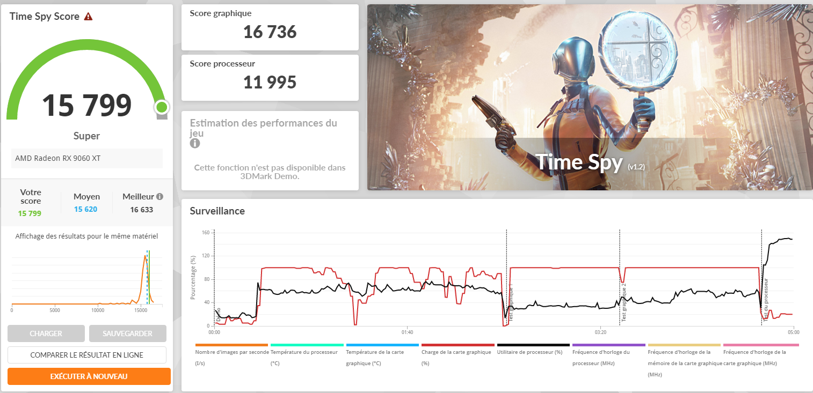
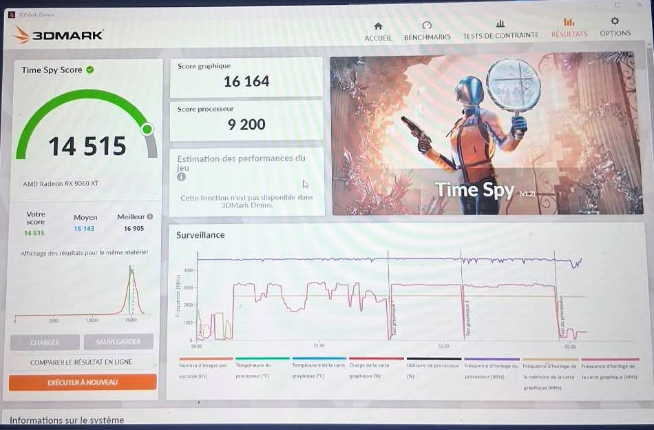

Il était temps que je change de carte graphique, car ma RX 580 commençait à se faire vieille.


Elle est magnifique ! Surtout avec son bandeau LED RGB que je peux contrôler avec différents effets de lumière. Mais le plus choquant c'est la taille : je n'ai jamais vu une aussi grosse carte à cause de ses gros radiateurs qui permettent de maintenir des températures très raisonnables. Elle consomme plus de 180 Watt. C'est simple, je n'arrive pas à dépasser les 60°C.
Pour moi, c'était le bon moment : à cause de l'IA, les prix des cartes graphiques vont recommencer à augmenter. Je l'ai eu au prix de 390€ et elle a déjà augmenter au prix de 500€ soi 110€ de plus économiser.
J'ai choisi la Sapphire RX 9060 XT Nitro + ; elle est très performante pour le prix. Avec ses 16 Go de VRAM, elle permet de jouer en 1440p avec des réglages élevés et reste plutôt « future proof » pour les jeux futurs. Je n'ai même pas eu besoin d'utiliser les technologies d'upscaling (FSR 4) ni la génération de frames.
Voici le résultat 3DMark Time Spy :

J'ai aussi comparé le résultat de la carte graphique de mon ami qui en a une identique (Gigabyte), mais la mienne reste la plus puissante grâce à un meilleur overclock.
Mon overclock est de 3320 MHz et celui de mon ami est de 3130 MHz, soit une différence de 190 MHz.

Et par rapport à mon ancienne carte :

Ce qui fait une différence de +270% de performance, c'est énorme ! Je suis vraiment content de mon achat, surtout pour le prix que je l'ai eu. C'est une excellente carte graphique pour les gamers qui veulent jouer en 1440p sans se ruiner.
Et voici tous les specs en détaill : https://www.techpowerup.com/gpu-specs/sapphire-nitro-rx-9060-xt-oc-16-gb.b12658